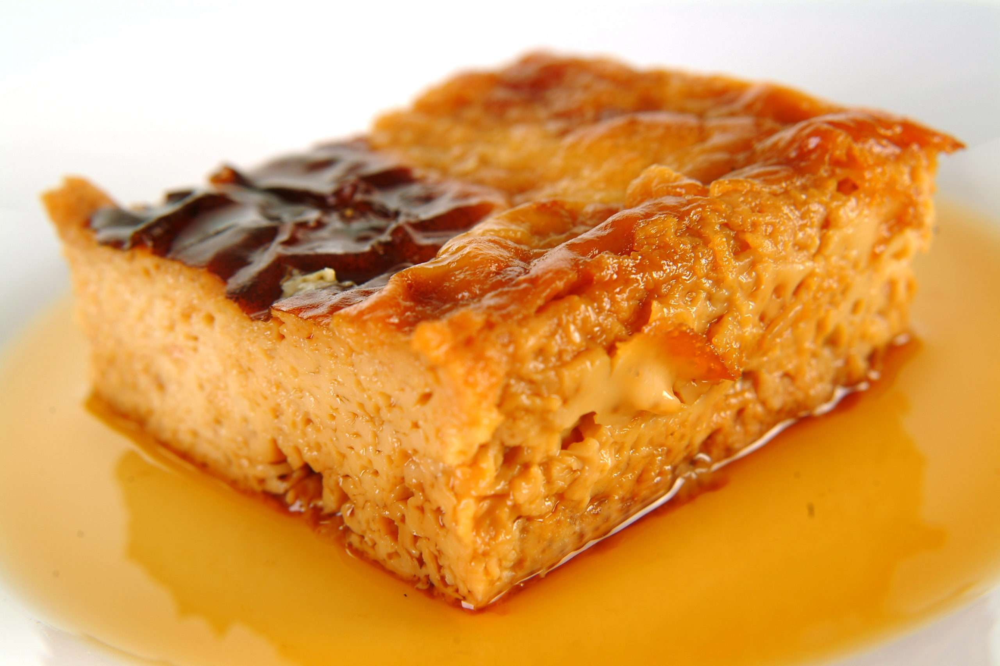

Leche asada
6-8 Servings

Utensils:
- Tempered glass jug
- flan mold
Ingredients
Caramel:
- 4 tablespoons granulated sugar
- 4 tablespoons water
Cream:
- 1 can of condensed milk
- 2 teaspoons vanilla essence
- 6 eggs
Preparation
Caramel:
- Place the sugar in the flan mold and cover it with water. Do not stir.
- Microwave on high power for 5-6 minutes, or until it turns a caramel color.
- Let it cool outside the microwave and spread it along the sides of the flan mold.
Cream:
- Pour the condensed milk into the jug.
- Then add 2 cans of water (using the same condensed milk can), and the vanilla essence.
- Microwave on high power (100%) for 3-4 minutes.
- Remove the jug from the microwave and add the eggs one by one, stirring gently between each egg.An electric mixer on low speed can be used.
- Pour this mixture into the flan mold with the caramel and microwave on high power for 16-18 minutes.
- When this dessert is lukewarm, transfer it to a serving dish.
Cooking time:
Caramel:
| Microwave Power |
Cooking Time |
| 650-700 W |
5-6 minutes |
| 600 W |
6-7 minutes |
| 500 W |
7-8 minutes |
Cream:
| Microwave Power: |
Cooking Time: |
| 650-700 W |
16-18 minutes |
| 600 W |
18-20 minutes |
| 500 W |
20-22 minutes |